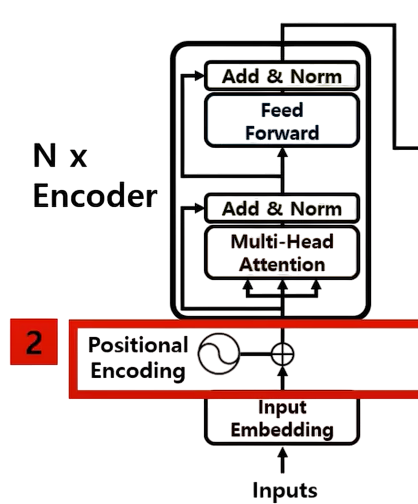

어텐션 메커니즘의 진화와 현대 AI의 근간
이전에 살펴본 RNN(LSTM, GRU) 기반의 Seq2Seq 모델은 '어텐션'을 도입하며
정보 병목 현상을 훌륭하게 해결했습니다. 하지만 RNN은 구조적으로 풀기 어려운 한계를 가지고 있었습니다.
RNN의 가장 큰 특징은 '순차적(Sequential)'으로만 계산해야 한다는 것입니다.
마치 도미노처럼, "I", "am", "a", "student"라는 단어를 하나씩 순서대로 처리합니다.
"am"을 계산하려면 반드시 "I"의 계산이 끝나야만 다음 단계로 넘어갈 수 있었죠.
이는 문장이 길어질수록 계산 속도가 매우 느려진다는 치명적인 단점이 있었습니다.
아무리 좋은 GPU가 있어도, 이 순차적인 구조 때문에 병렬 처리의 이점을 제대로 누릴 수 없었습니다.
그래서 2017년, "Attention Is All You Need" (어텐션만 있으면 돼)라는 도발적인 제목의 논문에서
RNN을 아예 없애버린 모델, 트랜스포머(Transformer)가 등장합니다.
트랜스포머는 문장 전체를 한 번에(병렬로) 입력받아 처리하는 방식을 택했습니다.
이 혁신적인 접근은 엄청난 속도 향상을 가져왔지만, 동시에 새로운 질문들을 던졌습니다.
"모든 단어를 한 번에 본다면, 'I'가 'am' 앞에 온다는 단어의 순서 정보는 어떻게 알 수 있을까?"
"문장마다 길이가 제각각인데, 어떻게 이것들을 하나의 묶음(배치)으로 효율적으로 처리할 수 있을까?"
트랜스포머의 핵심 설계는 바로 이 두 가지 질문에 대한 답을 찾는 과정에서 탄생했습니다.
본격적인 작동 원리에 들어가기 앞서, 트랜스포머의 전체적인 구조를 살펴보겠습니다.
트랜스포머는 Seq2Seq 모델처럼 크게 인코더(Encoder)와 디코더(Decoder) 두 부분으로 나뉩니다.
왼쪽 스택이 인코더(N× Blocks), 오른쪽 스택이 디코더(N× Blocks)입니다.
각 블록 내부에는 Multi-Head Attention, Add & Norm, Feed Forward 등의 구성 요소가 포함됩니다.
입력 문장(예: 한국어 "나는 학생이다")을 받아, 각 단어의 의미와 문맥적 관계를 파악하여
풍부한 정보가 담긴 벡터 시퀀스(메모리)로 변환합니다.
이 벡터 시퀀스는 디코더가 번역할 때 참고할 '원본 정보'가 됩니다. 내부적으로 여러 개의 인코더 블록이 쌓여 있으며,
각 블록은 셀프 어텐션과 피드 포워드 네트워크를 통해 입력 정보를 정교하게 다듬습니다.
인코더가 만든 벡터 시퀀스(K, V로 활용)와 이전에 자신이 생성한 단어들을 바탕으로,
다음 출력 단어(예: 영어 "I", "am", "a", "student")를 하나씩 순차적으로 예측하고 생성합니다. 디코더 역시 여러 개의 디코더 블록으로 구성되며, 각 블록은 마스크된 셀프 어텐션, 인코더-디코더 어텐션(Cross-Attention), 피드 포워드 네트워크를 포함합니다.
모델이 텍스트를 처리하기 위해선, 먼저 단어를
컴퓨터가 이해할 수 있는 숫자(벡터)로 변환하고,
잃어버린 순서 정보를 다시 부여해야 합니다.

컴퓨터는 '단어' 자체를 이해하지 못합니다.
그래서 단어를 컴퓨터가 이해할 수 있는 숫자의 조합(벡터)으로 바꿔주는 과정이 필요합니다.
임베딩은 텍스트의 각 단어를 고차원의 벡터(Vector)로 변환하는 과정입니다. 이 벡터는 단어의 의미와 문법적 특징, 그리고 다른 단어와의 관계를 수치적으로 표현합니다. 잘 훈련된 임베딩은 의미적으로 유사한 단어들(예: '왕'과 '여왕')을 벡터 공간상에서 가까운 위치에 배치합니다.
RNN은 단어를 순서대로 입력받아 처리하면서, 내부의 '상태(state)'를 계속 업데이트합니다.
이 '상태' 안에는 자연스럽게 "지금까지 어떤 단어들이 어떤 순서로 들어왔는지"에 대한 정보가 누적됩니다.
즉, RNN은 구조 자체가 순서 정보를 암묵적으로 학습합니다.
하지만 트랜스포머는 문장 전체를 한 번에 병렬로 처리합니다.
마치 단어들을 순서 없이 주머니에 담아 한꺼번에 보는 것과 같아서, "사과가 바나나보다 맛있다"와 "바나나가 사과보다 맛있다"를 구분할 방법이 없습니다.
이처럼 병렬 처리의 이점을 얻는 대신 잃어버린 순서 정보를 명시적으로 알려주기 위해 포지셔널 인코딩이 필수적입니다.
포지셔널 인코딩(Positional Encoding)은 단어의 상대적 또는 절대적 위치 정보를 모델에 알려주는 기술입니다.
각 위치(첫 번째, 두 번째...)마다 고유한 패턴을 가진 벡터(주로 사인, 코사인 함수를 이용해 계산된 값)를 생성하여,
이를 앞서 만든 임베딩 벡터에 그대로 더해줍니다.
이를 통해 모델은 각 단어의 고유한 [의미 + 위치] 정보를 동시에 가지게 되어,
병렬 처리 중에도 단어의 순서를 인지할 수 있게 됩니다.
이제 트랜스포머의 심장이라 불리는 '멀티 헤드 어텐션(Multi-Head Attention)'에 대해 자세히 알아봅니다.
이 복잡해 보이는 엔진은 사실 두 가지 중요한 문제를 아주 영리하게 해결합니다.
1. "의미 없는 빈칸(<PAD>)을 어떻게 무시할 것인가?" (길이 문제)
2. "문장 내 단어들의 복잡한 관계(문맥)를 어떻게 효과적으로 파악할 것인가?" (문맥 문제)
GPU는 여러 문장을 한 묶음('미니배치')으로 처리할 때 가장 빠릅니다. 하지만 문장 길이는 제각각이죠.
"I love school ." (4 단어) "Attention is all you need ." (6 단어)
길이를 맞추기 위해 짧은 문장 뒤에 의미 없는 <PAD> 토큰을 채워 넣습니다.
"I love school . <PAD> <PAD>" (6 단어) "Attention is all you need ." (6 단어)
하지만 모델이 어텐션 계산 시 이 쓸모없는 <PAD> 토큰에 조금이라도 '집중'하면 성능이 저하됩니다.
어텐션 마스크는 바로 이 <PAD> 토큰을 완벽하게 무시하도록 만드는 장치입니다.
어텐션의 핵심은 '가중합'입니다. 즉, 어떤 단어에 얼마나 집중할지 '비율(가중치)'을 계산해서 정보를 합치는 것이죠. <PAD> 토큰은 실제 문장의 일부가 아니므로, 이 토큰에는 0%의 가중치를 할당하여 정보 합산 과정에서 완전히 배제해야 합니다. 또한, 디코더에서는 '미래' 단어 정보를 미리 보는 것을 방지하기 위해서도 마스크가 사용됩니다(아래 섹션 5-2 참조).
먼저 Query와 Key 벡터를 내적하여 각 단어 간의 '관련도 점수'(어텐션 스코어)를 계산합니다.
점수가 높을수록 관련성이 높다는 의미입니다. (예: \([10.2, 8.1, 5.5, 3.1]\))
<PAD> 토큰이 있는 위치(Mask)를 찾아서, 해당 위치의 스코어 값에 음의 무한대 (\(-\infty\))를 더해줍니다.
(단순히 0으로 만드는 것이 아니라, 아주 작은 음수 값으로 만듭니다.) (예: \([10.2, 8.1, 5.5, -\infty]\))
이 마스킹된 스코어들을 Softmax 함수에 통과시킵니다.
Softmax 함수는 입력값들을 0과 1 사이의 확률값으로 변환하며, 모든 확률값의 합은 1이 되도록 만듭니다. Softmax의 핵심 연산은 각 입력값 \(x_i\)에 대해 지수 함수 \(e^{x_i}\)를 취하는 것입니다.
여기서 중요한 점은 \(e^x\) 함수는 \(x\)가 아주 작은 음수 값(즉, \(-\infty\))이 되면 그 결과가 0에 수렴한다는
수학적 특징입니다. (\(e^{-\infty} \approx 0\))
따라서, \(-\infty\)로 마스킹된 위치의 Softmax 결과값은 0이 됩니다. 반면, 마스킹되지 않은 다른 위치들은 \(e^{10.2}\), \(e^{8.1}\) 등 양수 값을 가지게 되고, 이 값들을 전체 합으로 나누어 최종 확률(가중치)을 얻습니다.
결과적으로, 최종 어텐션 가중치는 \([0.7, 0.3, 0.0, 0]\) 처럼,
<PAD> 토큰에 할당되는 가중치가 정확히 0%가 됩니다.
이 마스크를 '패딩 마스크(Padding Mask)'라고 부릅니다.
이제 트랜스포머가 문맥을 파악하는 핵심 원리인 '셀프 어텐션'을 자세히 보겠습니다.
이는 문장이 RNN처럼 순차적으로 정보를 누적하는 대신,
'자기 자신' 내부의 모든 단어 쌍 간의 관계를 한 번에 계산하여 문맥을 파악하는 과정입니다.
"I am a student"라는 문장이 입력되면, 각 단어는 세 가지 역할(서로 다른 '관점' 또는 '기능'을 가진 벡터)로 변환됩니다. 이 변환은 학습 가능한 선형 변환(가중치 행렬 \(W^Q, W^K, W^V\) 곱하기)을 통해 이루어집니다.
"현재 단어(나)의 입장에서, 문맥을 파악하기 위해 다른 단어들에게 물어볼 질문"입니다.
현재 단어의 '상태(state)'를 나타내며, 어떤 정보가 필요한지를 표현합니다.
"다른 단어들의 질문(Query)에 대답하기 위해, 내가(단어) 가진 정보의 '키워드' 또는 '색인'"입니다.
Query와 비교될 대상입니다.
"Query와 Key의 유사도(관련성)가 높다고 판단될 때,
실제로 전달될 나의(단어) '실제 정보 내용'"입니다.
"I"(\(Q_1\))가 자신의 문맥적 의미를 파악하는 과정입니다.
"I"(\(Q_1\))가 "나는 이 문장에서 어떤 역할을 하지?"라고 질문합니다.
이 \(Q_1\)은 자기 자신을 포함한 문장 전체의 Key(\(K_I, K_{am}, K_a, K_{student}\))와
1:1로 비교(주로 Scaled Dot-Product)되며 '관련도 점수'(어텐션 스코어)를 계산합니다.
계산된 스코어를 Softmax 함수에 통과시켜, 각 단어에 얼마나 '집중'할지를 나타내는 확률
(어텐션 가중치)로 변환합니다. (예: "am"에 30%, "student"에 20%...)
계산된 가중치대로 문장 전체의 Value(\(V_I, V_{am}, V_a, V_{student}\))를 가중합합니다.
즉, 관련성이 높은 단어의 정보(Value)를 더 많이 반영하여 합칩니다.
이렇게 취합된 정보가 바로 '주변 문맥이 풍부하게 반영된 새로운 I'의 최종 출력 벡터가 됩니다.
이 과정은 "I", "am", "a", "student" 모든 단어에 대해 동시에(병렬로) 일어납니다.
\(Q_1, Q_2, Q_3, Q_4\)가 한 번에 모든 K와 비교되고, 한 번에 4개의 출력값을 내놓습니다.
이것이 트랜스포머의 압도적인 속도 비결입니다.
중요한 것은 이것이 Seq2Seq의 교차 어텐션처럼 인코더 \(\rightarrow\) 디코더의 방향성을 가지는 것이 아니라, 하나의 시퀀스 내부에서 모든 단어 쌍 간의 관계를 양방향으로 파악한다는 점입니다. 이는 단순히 정보를 전달하는 것을 넘어, 문장의 구조와 의미 자체를 깊이 이해하는 기초가 됩니다. 이 셀프 어텐션 계산 모듈(블록)이 트랜스포머의 인코더와 디코더 내부에 여러 층(layer)으로 쌓이게 됩니다.
만약 방금 설명한 셀프 어텐션 계산(Q, K, V를 만들고 스코어를 계산하는 과정)을 딱 한 번만 수행한다면, 모델은 문장의 한 가지 측면(예: 단어 간의 거리)에만 집중하게 될 수 있습니다. 마치 사람이 사물을 볼 때 한쪽 눈만 사용하는 것과 같습니다.
멀티 헤드 어텐션(Multi-Head Attention)은 이 문제를 해결하기 위해, "서로 다른 관점을 가진 여러 개의 어텐션 계산을 동시에 수행하자"는 아이디어입니다. 즉, 여러 명의 전문가(Head)가 각자 다른 측면에서 문장을 동시에 분석하는 것에 비유할 수 있습니다.
1 여러 '관점'(Head) 생성 (선형 변환)
하나의 입력(임베딩+포지셔널 인코딩된 벡터)으로부터, 서로 다른 가중치 행렬(\(W^Q_i, W^K_i, W^V_i\))을 사용하여 여러 세트(Head 개수만큼, 보통 8개 또는 12개)의 Q, K, V를 생성합니다. 각 세트는 서로 다른 '관점'이나 '표현 공간(subspace)'에서 정보를 처리하도록 학습됩니다. 이것은 '쿼리를 더 만든다'기 보다는, '다양한 종류의 쿼리, 키, 밸류 세트를 만든다'고 이해하는 것이 더 정확합니다. 이렇게 함으로써 모델은 인코더-인코더(Self), 디코더-디코더(Self), 디코더-인코더(Cross) 등 다양한 상호작용에서 풍부한 정보를 추출할 수 있습니다.
2 병렬 어텐션 수행 (Scaled Dot-Product Attention)
각 헤드는 'Scaled Dot-Product Attention'이라는 메커니즘을 사용하여 독립적으로 어텐션 계산을 병렬 수행합니다. 이 계산 과정이 바로 셀프 어텐션의 핵심 연산입니다.
Query와 Key 행렬을 내적(Matrix Multiplication)하여 단어 쌍 간의 유사도(스코어)를 계산합니다.
계산된 스코어를 Key 벡터 차원(\(d_k\))의 제곱근(\(\sqrt{d_k}\))으로 나누어 줍니다. 이는 \(d_k\)가 커질수록 내적값이 너무 커져서 Softmax 함수가 특정 값에만 집중(gradient saturation)하는 것을 방지하고 학습을 안정화시키는 중요한 역할을 합니다. (논문 저자들이 실험적으로 발견한 기법)
$$ Attention(Q, K, V) = softmax(\frac{QK^T}{\sqrt{d_k}})V $$
필요한 경우 마스크(패딩 마스크 또는 룩어헤드 마스크)를 적용하여 특정 위치의 스코어를 \(-\infty\)로 만듭니다.
마스킹된 스코어에 Softmax 함수를 적용하여 합이 1인 어텐션 가중치(확률 분포)를 얻습니다.
계산된 가중치와 Value 행렬을 내적하여, 각 단어에 대한 최종적인 문맥 벡터(가중합된 Value)를 얻습니다. 이것이 각 헤드의 출력입니다.
이렇게 각 헤드는 서로 다른 종류의 관계(예: Head 1은 문법적 관계, Head 2는 의미적 유사성)를 집중적으로 학습하게 됩니다.
3 결과 취합 및 최종 출력 (Concat & \(W^O\))
여러 헤드(예: 8개)에서 각각 계산된 출력 벡터들(\(head_1, ..., head_h\))을 하나로 이어 붙입니다(Concatenate). 이렇게 합쳐진 벡터는 다양한 관점에서 분석된 풍부한 정보를 담고 있습니다. 하지만 아직은 각 관점의 결과가 단순히 나열된 상태이므로, 이 벡터를 마지막으로 하나의 출력용 선형 변환(\(W^O\))에 통과시켜, 모든 관점을 종합한 최종적인 하나의 문맥 벡터를 만들어냅니다. 이 벡터가 해당 멀티 헤드 어텐션 블록의 최종 출력이 되어, 다음 레이어(예: Feed Forward Network)의 입력으로 전달됩니다.
$$ MultiHead(Q, K, V) = Concat(head_1, ..., head_h)W^O $$
이 전체 과정 (여러 헤드 생성, 병렬 어텐션, 결과 취합)이 'Attention Detail' 슬라이드에서 보여주는 핵심 프로세스입니다.
이제 이 강력한 'MHA 블록'과 '포지셔널 인코딩', 그리고 '잔차 연결' 등의 부품들을 조립하여 트랜스포머 모델의 전체 구조를 완성합니다.
트랜스포머는 크게 인코더(Encoder)와 디코더(Decoder)라는 두 개의 부분으로 구성됩니다.
인코더의 임무는 "입력된 문장(예: 한국어)을 받아서, 문맥을 완벽하게 이해한 숫자 표현(벡터)으로 만드는 것"입니다. 이 벡터가 나중에 디코더가 참고할 '원본 정보'가 됩니다.
인코더는 여러 개의 동일한 '인코더 블록'이 층층이 쌓인 구조입니다. 각 블록은 주로 2개의 하위 계층으로 구성됩니다.
입력 문장 내부의 관계를 파악합니다.
어텐션을 통해 얻은 정보를 각 단어 위치마다 독립적으로 추가 처리하여 더 풍부한 표현을 만듭니다.
(각 하위 계층 후에는 잔차 연결(Add) 및 층 정규화(Norm)가 적용됩니다.)
인코더의 MHA는 '인코더 셀프 어텐션'만 사용합니다. 즉, Query, Key, Value가 모두 인코더의 이전 층 출력에서 나옵니다. "그 동물은 피곤해서 그것이..."에서 '그것'이 '동물'임을 파악하는 등, 오직 입력 문장 내부의 문맥과 의존성을 파악하는 데만 집중합니다.
이때, 문장 길이를 맞추기 위한 <PAD> 토큰을 무시하기 위해 '패딩 마스크'가 적용됩니다.
디코더의 임무는 "인코더가 전달한 '원본 정보'를 바탕으로, 새로운 문장(예: 영어)을 한 단어씩 순차적으로 생성하는 것"입니다. 디코더는 2가지 종류의 MHA를 사용하여 두 가지 중요한 임무를 동시에 수행합니다.
디코더도 여러 개의 동일한 '디코더 블록'이 쌓인 구조이며, 각 블록은 주로 3개의 하위 계층으로 구성됩니다.
이미 생성된 출력 시퀀스 내부의 관계를 파악합니다.
출력 시퀀스를 생성하기 위해 인코더의 출력 정보를 참조합니다.
어텐션 정보를 추가 처리합니다.
(마찬가지로 각 하위 계층 후에는 Add & Norm이 적용됩니다.)
Masked Multi-Head Self-Attention (디코더 셀프 어텐션)
Q, K, V가 모두 디코더의 이전 층 출력(즉, 지금까지 생성된 단어들)에서 나옵니다.
핵심은 '마스크': 디코더는 단어를 하나씩 생성해야 합니다. 예를 들어 "I am a" 다음에 "student"를 예측해야 할 때, 모델이 정답인 "student"를 미리 보고 예측하면 안 됩니다(미래 정보 누설, Look-Ahead). 이를 방지하기 위해 특별한 마스크가 필요합니다.
작동: 여기서는 '패딩 마스크'뿐만 아니라, '룩어헤드 마스크(Look-Ahead Mask)'도 함께 적용됩니다. 룩어헤드 마스크는 현재 예측하려는 단어(t 시점)보다 미래에 있는 모든 단어 위치의 스코어에 음의 무한대(\(-\infty\))를 덮어씌웁니다. 이로 인해 디코더는 오직 현재 시점과 그 이전 시점의 단어들만 참고하여 다음 단어를 예측하게 됩니다. 이 룩어헤드 마스크는 오직 디코더의 첫 번째 MHA(셀프 어텐션)에만 적용됩니다.
Multi-Head Cross-Attention (교차 어텐션)
이것이 바로 Seq2Seq에서 배운, 인코더와 디코더가 소통하는 '번역'을 위한 진짜 어텐션입니다.
Query (Q): 디코더의 이전 층(Masked Self-Attention) 출력값. (즉, "나 지금 'am'까지 번역했는데, 이제 원본 문장의 뭘 봐야 해?")
Key (K) & Value (V): 인코더의 최종 출력값. (즉, "문맥 파악이 끝난 원본 문장 전체")
여기서는 미래 정보 누설 문제가 없으므로 '패딩 마스크'만 적용됩니다.
마지막으로, 트랜스포머의 각 하위 계층(MHA, FFN) 뒤에는 거의 항상 'Add & Norm'이라는 과정이 따라옵니다.
Add (잔차 연결): 계산 전의 입력값 \(x\)를 계산 후의 출력값 \(F(x)\)에 그대로 더해주는 (\(F(x) + x\)) 구조입니다. 이는 깊은 네트워크에서 정보(기울기)가 소실되는 것을 막아 안정적인 학습을 가능하게 합니다. RNN의 '상태(state)'가 과거 정보를 요약하여 전달했다면, 잔차 연결은 이전 '상태'의 원본 정보를 다음 계층으로 직접 전달하는 통로 역할을 하여 정보의 흐름을 원활하게 합니다.
Norm (층 정규화): 각 층의 출력값(Add의 결과)의 분포를 안정화시켜 학습 속도를 높이고 성능을 개선하는 기법입니다.
트랜스포머는 RNN의 순차 처리라는 고질적인 병목 현상을 '셀프 어텐션'을 통한 완전한 병렬 처리로 해결하며 AI 모델의 학습 속도와 성능을 비약적으로 향상시켰습니다.
병렬 처리: 셀프 어텐션으로 문장 전체를 동시에 처리하여 GPU 효율 극대화.
문맥 이해: 멀티 헤드 어텐션으로 다양한 관점에서 단어 간의 복잡한 관계(장거리 의존성 포함) 파악.
순서 정보: 포지셔널 인코딩으로 병렬 처리 중에도 단어 순서 인지.
가변 길이 처리: 어텐션 마스크로 의미 없는 패딩 토큰 무시.
정보 누설 방지: 룩어헤드 마스크로 디코더가 미래 정보를 보지 못하도록 제어.
안정적 학습: 잔차 연결과 층 정규화로 깊은 네트워크 훈련 가능.
"어텐션 자체만으로 인코딩과 디코딩이 가능하다"는 것을 증명한 이 아키텍처는, 단순히 Seq2Seq 문제를 넘어 자연어 처리 전반의 패러다임을 전환시켰습니다. 문장의 양방향 문맥을 깊이 이해하는 BERT, 놀라운 생성 능력을 보여준 GPT 등 현대 AI를 대표하는 모델들이 모두 트랜스포머를 기반으로 탄생했습니다.
트랜스포머는 이제 자연어 처리를 넘어 컴퓨터 비전, 음성 인식 등 다양한 분야로 확장되며 AI 기술 발전의 핵심 동력으로 작용하고 있습니다.